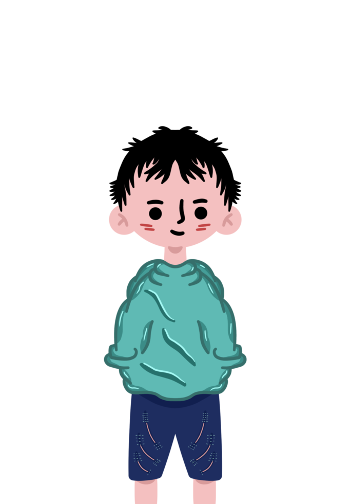

Un poco de mí
- Mi nombre es Juan De Dios Fernandez Hermitaño
- Vivo en Chorillos - Santa Isabel
- Tengo 21 años
- Trabajo en un Centro de Comida Rápida muy popular


Mis intereses y gustos
- La Programación
- El Diseño Web
- Pasar tiempo con mi familia
- Me gusta escuchar música la mayor parte del tiempo


Aquí de 3 a 5 años
- Me veo con la carrera técnica terminada
- Con un auto nuevo
- Trabajando en una empresa extranjera
- Con salud y mi familia completa